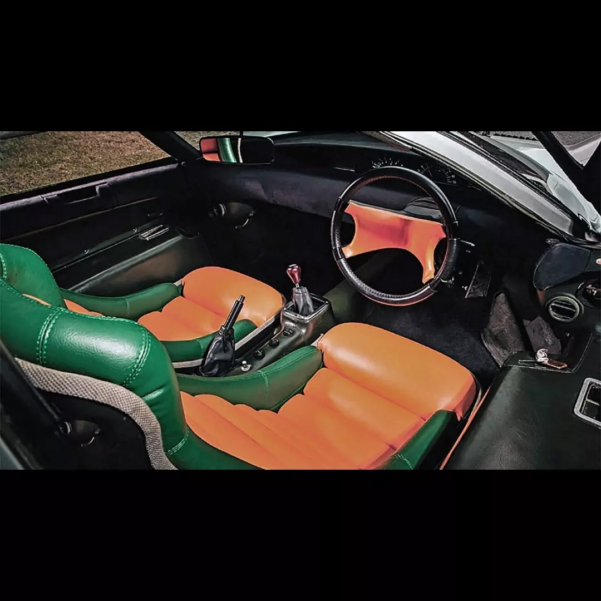

Velocidad máxima: 241km/h
0-100 km/h: ?
Potencia máxima: 247hp
Longitud: 4330mm
Anchura: 1720mm
Altura: 1065mm
Batalla: 2450mm
Peso: 850kg
Se mostró por primera vez al público en el Salón del Automóvil de Tokio de 1970 . Es un coupé de dos puertas , al que se accede por puertas de ala de mariposa que se abren hacia adelante. Se promocionó como un banco de pruebas móvil para la seguridad vial, incluidas luces multicolores en la parte trasera que indicaban si el automóvil aceleraba, frenaba o circulaba. El frenado se mostró con luces rojas, el crucero con luces ámbar y la aceleración con luces verdes. Está propulsado por un motor central Wankel de doble rotor de 982 cc que se montó adelante del eje trasero. Se accede al motor a través de puertas de ala de gaviota.
